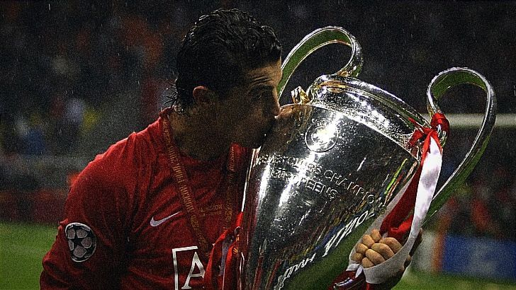
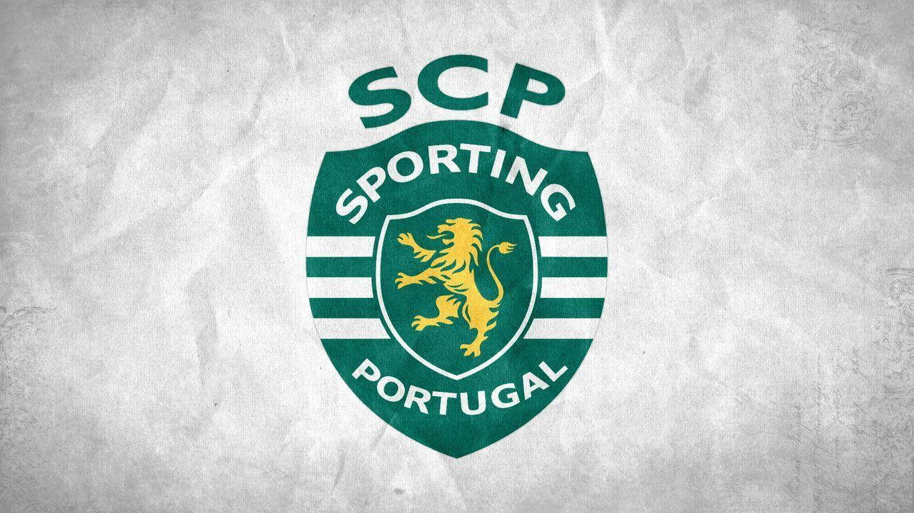
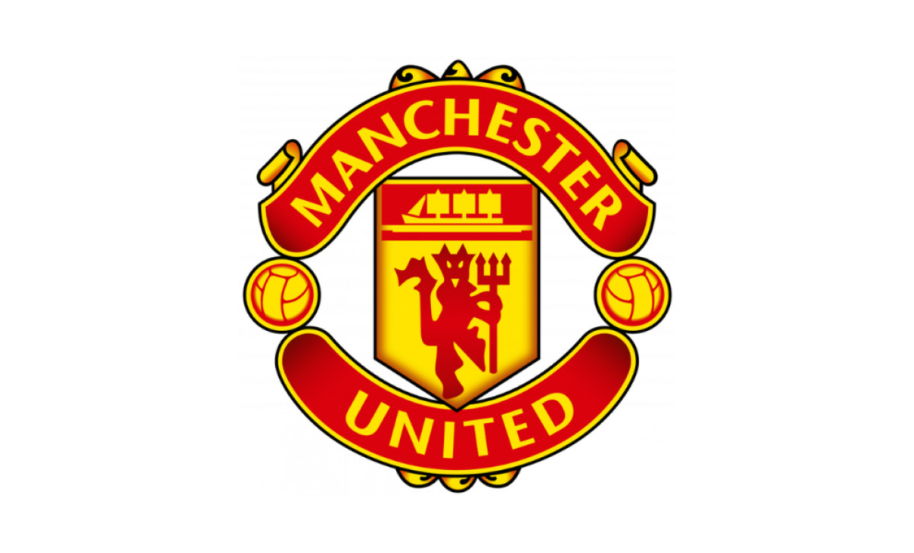
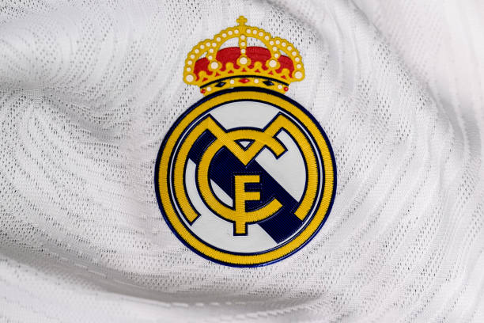
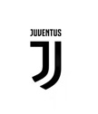
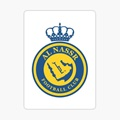

Cristiano Ronaldo dos Santos Aveiro (born February 5, 1985), widely regarded as one of the greatest footballers in history, is a Portuguese professional forward who captains both Al-Nassr in the Saudi Pro League and the Portugal national team. Nicknamed CR7, he has scored over 960 official senior career goals, making him the all-time top goalscorer in men's football. He holds numerous records, including most international caps (226) and goals (143) for Portugal, most UEFA Champions League goals (140), and is the only player to score 100 goals for four different clubs.
| Clubs | Matches | Goals | Assists |
|---|---|---|---|
 Sporting CP |
31 | 5 | 6 |
 United FC |
346 | 145 | 73 |
 RealMadrid CF |
438 | 450 | 131 |
 Juventus FC |
134 | 101 | 28 |
 Al-Nassr |
133 | 118 | 23 |